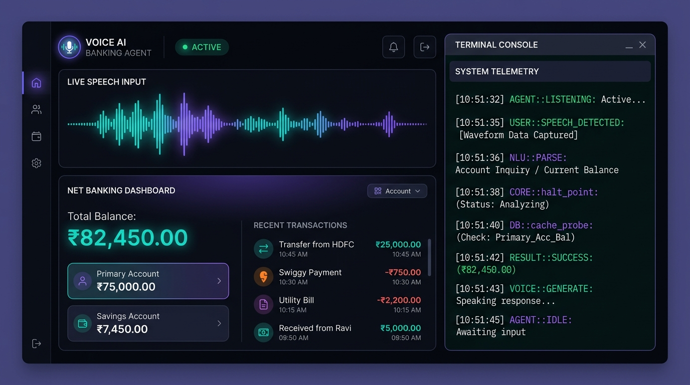
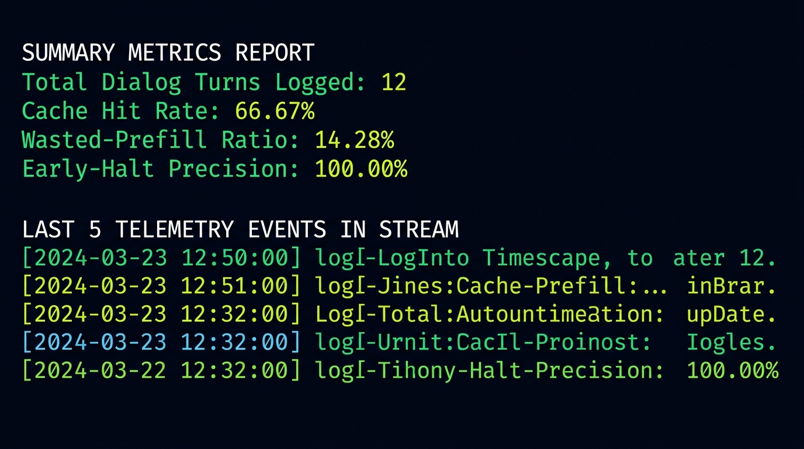

Next-Gen Voice AI
Banking Support Agent
A production-grade, low-latency, multilingual voice banking edge system in Go. Dynamic English/Hindi Turn Supervisor, speculative cache probing to bypass LLM latency, WebRTC media gateway, and Cassandra audit logs.
Autonomous voice-first support edge
Built in Go, v2 replaces slow serial text execution with a highly parallelized edge framework designed for the strict safety, localization, and sub-second latency constraints of modern banking apps.
Saga Transaction Safeguards Safety
Implements client-side generated unique_ref_no to prevent duplicate debit actions on network retry loops. Automatically reconciles banking states with payment_ref_no returned on success.
Speculative Probing Performance
Runs local deflector LLM prefill (Ollama) in parallel with Qdrant vector database cache probes. Halted early on similarity scores ≥ 0.96 to bypass GPU inference queues entirely.
Symmetric Multi-Replica Topology
The application uses Nginx L4 load balancing to route connections across three stateless Go orchestrator server replicas. Session states and confirmation tokens are synchronized in a shared Redis cache layer.

Parallel Execution Pipeline
Bypassing GPU Prefill Latency
While the user is speaking, the edge gateway splits the speech recognition transcripts into two parallel execution branches:
- Branch A (Speculative Prefill): Warm-ups the local deflector LLM (Ollama) to perform prefill computation on incremental tokens.
- Branch B (Cache Probe): Checks Qdrant vector database collections for exact semantic matches against historical FAQ records or parameterized transaction triggers.
- Halt Point: If Qdrant returns a score exceeding the EXTREME threshold (≥ 0.96), Branch A is immediately aborted, saving CPU/GPU clock cycles.
Durable Compliance Audit Logs
Every turn decision point is recorded asynchronously. Logging runs on top of Redis Streams (our local Kafka stand-in) and writes to Apache Cassandra for time-series persistence.
Telemetry Metrics Analyser
Our custom Go metrics analyzer outputs compliance reports based on live event streams:
- Cache Hit Rate: Ratio of questions answered via cache/FAQ records vs. LLM deflection.
- Wasted-Prefill Ratio: Prefill tokens wasted on turns that ended as cache hits.
- Early-Halt Precision: Confirmed extreme-confidence cache hits verified by final transcript reconciles.
$ ./metrics.sh
# Runs CLI metrics parser on top of Redis Stream logs
Setup & Deployment
Run the integrated launcher script. It checks system prerequisites, downloads required models, compiles Go binaries, and starts the containerized database services.
# 1. Clone the repository and execute bootstrapper
$ ./start-app-v2.sh
# 2. View the dashboard panel in your browser
🔗 http://localhost:9090
# 3. View the system performance telemetry report
$ ./metrics.sh
# 4. Tear down the stack and clean data volumes
$ ./teardown.sh